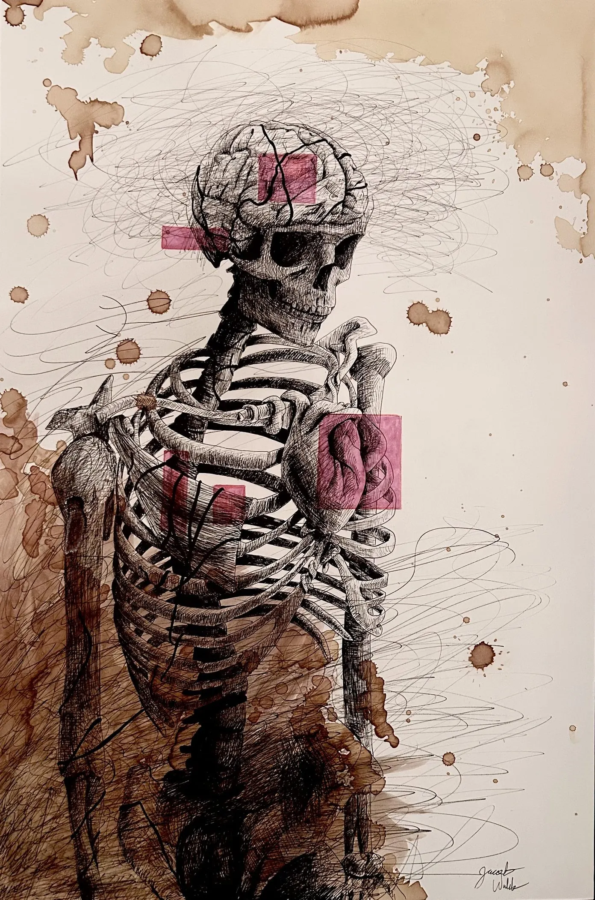
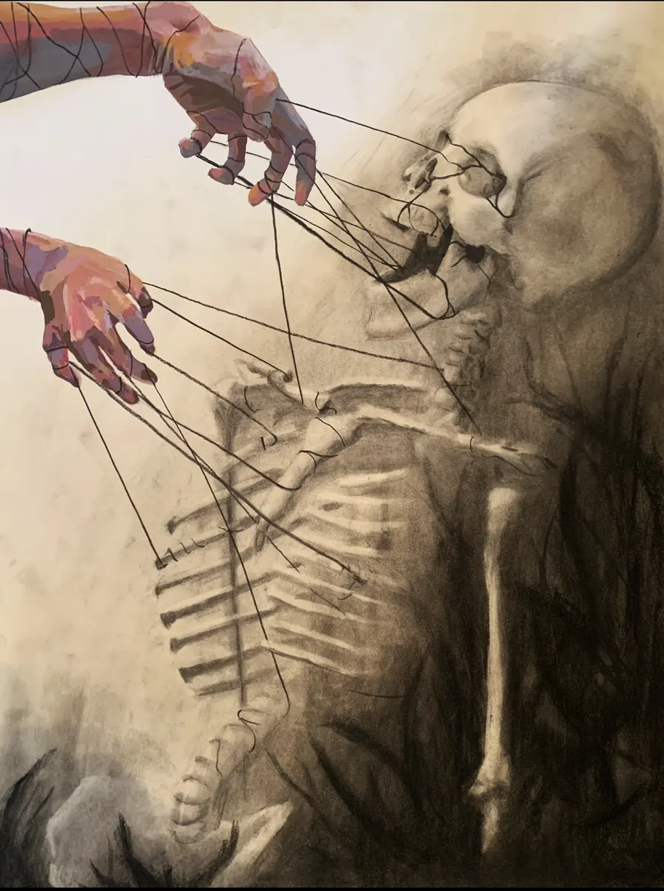
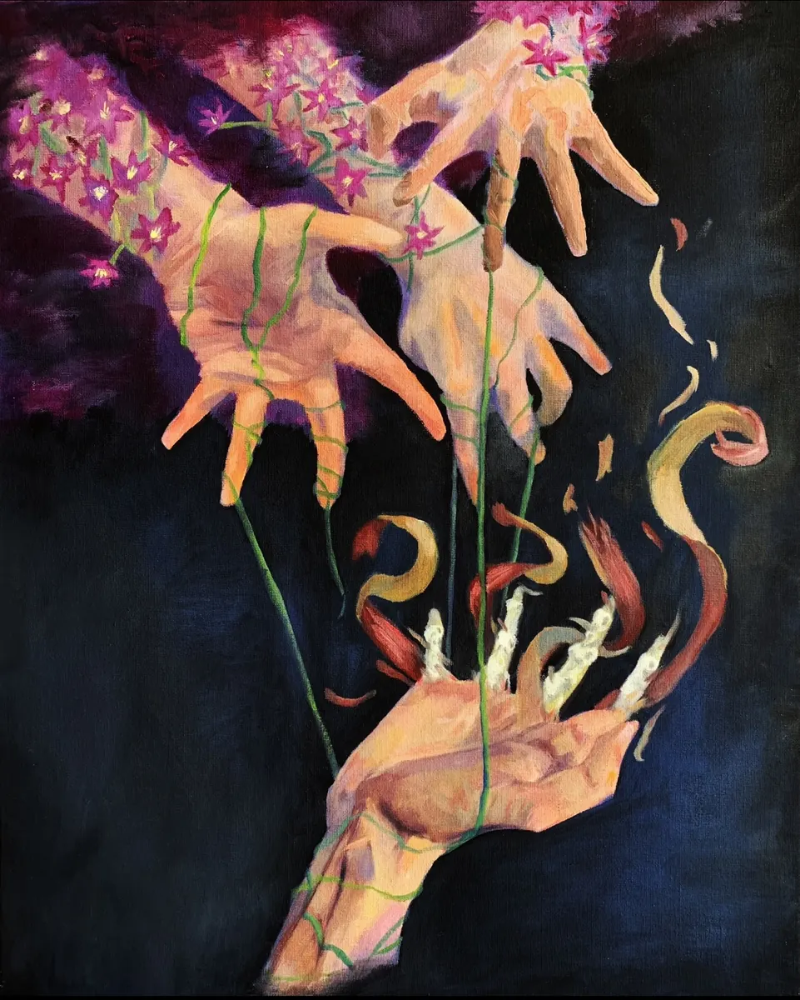

// Economics · Data Science · Finance
Incoming Market Risk Analyst at Goldman Sachs · USC · FRM Part I — passed, top quartile across all four domains.
01 / About
Incoming Goldman Sachs Market Risk Analyst · SI Leader for ~100 students · FRM Part I, top quartile.
Junior at USC, majoring in Economics & Data Science with a minor in Mathematics.
I've never been great at memorization — I look up syntax, I struggle with state capitals, biology was never my thing. What I do well is understanding the logic behind things. That's what keeps pulling me toward analytical problems: macro trends, probability, risk, and finding the cleaner way to run a computation.
I'm always looking to grow, and I enjoy connecting with people who share that same problem-solving mindset.
Previously · Chapman University · B.S. Computer Science & B.A. Economics · 4.0 GPA · transferred 2024
Incoming · Summer 2026
Goldman Sachs · Market Risk Division · Dallas, TX
Aug 2025 – Present
USC Dornsife Next Generation Science Programs · Los Angeles, CA
Jun 2025 – Present
Dr. James Alcala, USC · Los Angeles, CA
Jun 2024 – Aug 2024
Palo Alto Swim and Sport · Palo Alto, CA
02 / Research & Projects
Bloomberg Terminal options paper (with interactive charts), Fed Challenge presentation, and an LLM pipeline — all using real data.
03 / Skills & Credentials
FRM® Part I — top quartile across all four domains. Python, R, Bloomberg Terminal, and more skills inside.
Top quartile (76th–100th percentile) across all four exam domains.
04 / Beyond the Resume
Featured piece on the biology of anxiety and stress — with a full written breakdown. Plus a gallery of oil, ink, and graphite work.
Outside of coursework and research, I paint and draw. Most of the work explores psychology, the body, and social pressure, usually through a recurring cast of skeletons, vines, and hands. The pieces below are a mix of graphite, ink, and oil.

Most illustrations of anxiety focus on the psychological or social dimensions: what it feels like, or how it's perceived. This piece tries to fill a different gap, asking what is actually happening inside the body. It draws on the biology of chronic stress (the HPA axis, allostatic load, and the SAM system) and looks at how medications like Escitalopram partially, but not completely, restore order.
Allostatic Load. The vines wrapping around the brain and chest represent neural atrophy and declining muscle protein, both hallmarks of prolonged HPA axis activation. The coffee stains on the canvas stand in for bone deterioration and the late nights caused by stress-related sleep disturbances. The chaotic scribbles are the feedback loop itself: stress triggers cortisol release, resistance builds, which demands even more cortisol, which compounds the damage.
Sympatho-Adrenomedullary System. The heart sitting outside the ribcage represents the physical sensation of a panic attack, specifically the feeling of your heart beating out of your chest. Vines around the throat simulate the shortness of breath that accompanies acute anxiety episodes.
Mitigants. The magenta boxes are the only structured, geometric elements in the piece, representing SSRIs like Escitalopram. They bring order to isolated corners of the composition. But the surrounding chaos remains: medication reduces cortisol, not everything.
Full Written Explanation (PDF)Anxiety over imperfection preventing work from even starting. Hands paused mid-motion, unable to commit to the first mark.
The external pressure many young people feel to overperform in everything. Drowning in the volume of it, arms still reaching for more.

External forces pulling the strings. Vivid, willful hands above controlling a skeleton that has no say in the direction it moves.

Good intentions dragging the bottom hand into a better environment, even as the process destroys it. The vines that carry the flowers also unravel the hand below.
05 / Contact
Email, LinkedIn, and résumé — all listed below.
Whether you're interested in discussing research, risk, or just want to connect — I'd love to hear from you.